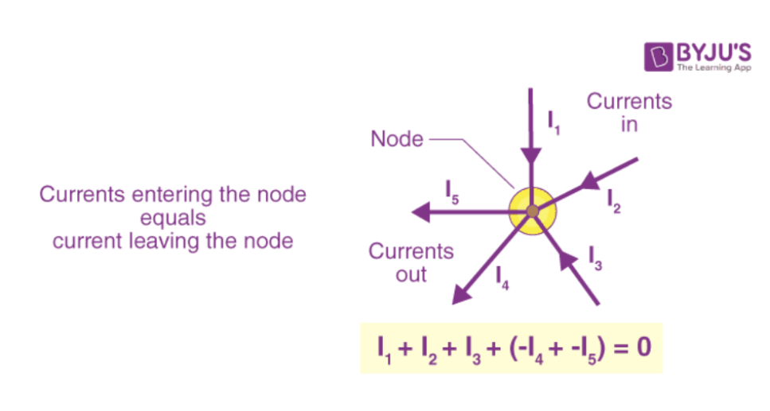
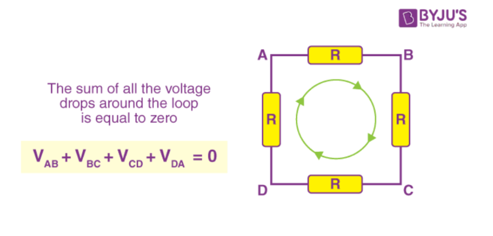

2.1 Electric Potential & Electrical Potential Difference
Electric potential is the work done per unit charge to bring a charge from infinity to a point in an electric field.
It shows how much electric potential energy a charge has at that point.
V = W / q
Where W is work and q is charge. The SI unit is volt (V).
Potential difference (voltage) is the difference in electric potential between two points in an electric field.
It tells us how much energy per unit charge is needed to move a charge from one point to another.
V = W / q
The formula is V = W/q, and it is also measured in volts (V).
The main difference is that electric potential is measured at one point,
while potential difference compares two points.
Electric current flows from higher potential to lower potential,
and this flow is usually created by a battery or cell.
The concept of voltage is related to Ohm’s Law:
V = IR
2.2 Electric Current
Electric current is the flow of electrons through a conductor. It is very important in daily life because many devices like phones, televisions, ovens, and lights use electric current to work. The SI unit of electric current is the ampere (A).
It is very important in daily life because many devices like phones,
televisions, ovens, and lights use electric current to work.
Materials that allow electricity to flow easily are called conductors (like metals, salt solutions, and the human body), while materials that block the flow of electricity are called insulators (like plastic, wood, and glass).
For electric current to flow, a closed circuit and a voltage source (such as a battery) are needed. Voltage pushes electrons to move in one direction.
There are two types of current: Direct Current (DC), which flows in one direction, and Alternating Current (AC), which changes direction. When electric current flows, it can cause several effects such as heating (like in an iron), magnetic effects (like electromagnets), and chemical effects (like electroplating).
2.3 Ohm’s Law
Georg Simon Ohm (1787–1854) discovered that the electric current (I) flowing in a wire is directly proportional to the voltage (V) applied (I ∝ V). This relationship is called Ohm’s Law, where voltage causes current to flow. It is an empirical law, meaning it was proven through experiments, but the relationship does not always happen in all materials.
In circuits, resistance (R) is what slows down or blocks the flow of current. It happens when moving charges collide with atoms and molecules in a material, which limits the current. Current is inversely proportional to resistance (I ∝ 1/R), so if resistance increases, the current decreases.
When these ideas are combined, we get Ohm’s Law:
I = V / R
2.4 Application of Ohm’s Law
One application of Ohm’s Law is in household electrical devices like a light bulb. Using Ohm’s Law (I = V/R), we can calculate how much current will flow through the bulb when a certain voltage is applied and the resistance of the bulb is known.
For example, if a bulb has a resistance of 60 Ω and the voltage is 120 V, the current can be calculated:
I = V / R = 120 / 60 = 2 A
This means 2 amperes of current flow through the bulb. This calculation helps engineers and electricians design safe electrical circuits and choose the right components so devices work properly without overheating.
2.5 Kirchhoff’s Law
Gustav Robert Kirchhoff (1824–1887) developed Kirchhoff’s Circuit Laws in 1845 to help analyze electrical circuits. These laws are based on the conservation of charge and energy and are used to calculate current, voltage, and resistance in circuits.
Kirchhoff’s Current Law (KCL)
The total current entering a junction (node) is equal to the total current leaving it. This follows the conservation of charge.
I₁ + I₂ + I₃ − I₄ − I₅ = 0

Kirchhoff’s Voltage Law (KVL)
The sum of all voltages around a closed loop equals zero. This follows the conservation of energy and means that the total voltage supplied equals the total voltage drop.

2.6 Series and Parallel Circuits
Series Circuit
A series circuit is a circuit where the same current flows through all components because the current has only one path. For example, string lights connected in series will all turn off if one bulb breaks.
Parallel Circuit
A parallel circuit is a circuit where electric current has multiple paths to flow. In this circuit, each component has the same voltage across it.
2.7 Electromotive Force (EMF)
Electromotive Force (EMF) is the electric potential produced by a battery or generator that pushes electric charges through a circuit. It is the work done per unit charge to move electricity. The symbol for EMF is ε, and its unit is volt (V).
ε = V + Ir
EMF can sometimes be negative if it works against the direction of power.
EMF is different from potential difference. EMF is the energy given to charges, while potential difference is the energy used by components in a circuit. Terminal voltage is the voltage across a battery when the circuit is turned on, while EMF is the maximum voltage when no current flows.
2.8 Electric Sources
Direct Current (DC): electricity flows in one direction (example: batteries).
Alternating Current (AC): electricity changes direction repeatedly (example: generators in power plants).
Electric sources produce Electromotive Force (EMF), which is the push that makes electrons move through a circuit.
2.9 Resistor
A resistor limits electric current in a circuit.
Control Voltage: Resistors can reduce the voltage in certain parts of a circuit so that devices receive the correct amount of voltage.
Control Current: They limit the amount of current flowing in a circuit to prevent damage to electronic components.
Voltage Divider: Resistors can divide voltage in a circuit so different parts receive different voltage levels.
Protect Components: By controlling current, resistors protect sensitive components from excessive electricity.
Learn More From our Presentation:
Interactive Simulation: Circuit Construction Kit (DC)
Build and test electric circuits using this interactive PhET virtual lab.
You can connect batteries, resistors, bulbs, and switches, then measure current and voltage using virtual ammeters and voltmeters to explore series and parallel circuits.